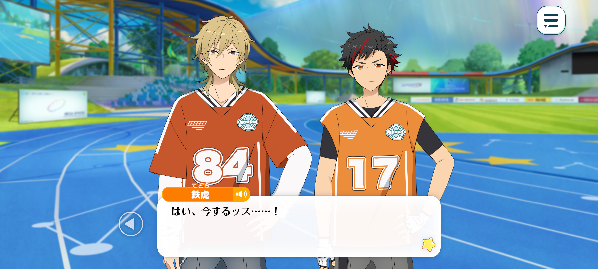
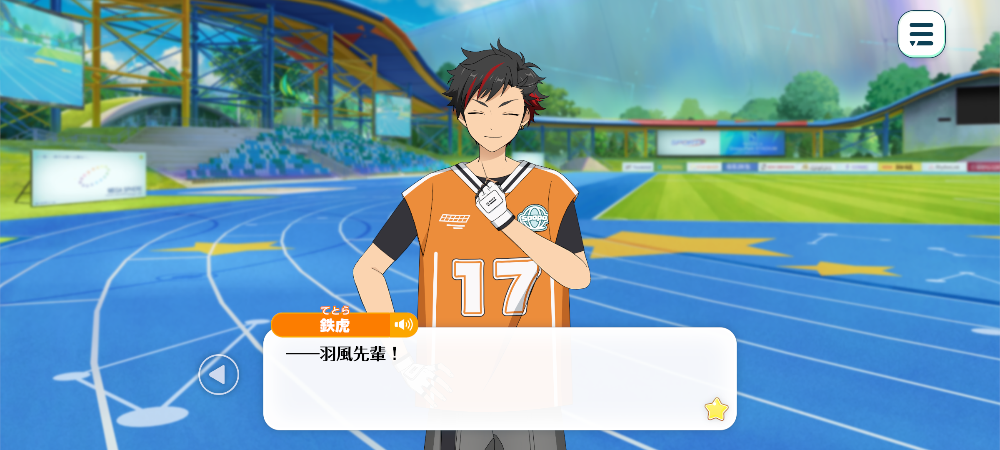
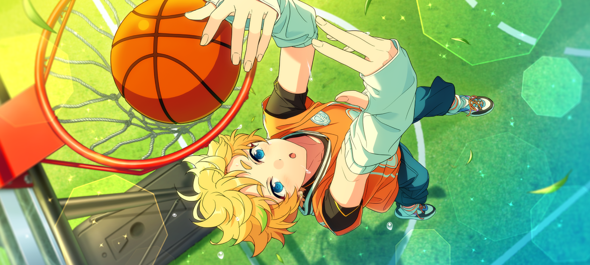
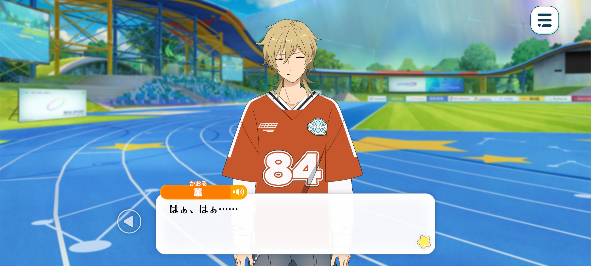

Scout! Ambassador Spopo
Passion Is The Key To Appeal – Chapter 5



Kaoru: Tetora-kun, pass it over here!
Tetora: Got it…!
Jun: I told you I wasn't going to let that happen. The ball's mine now...♪
Tetora: Ah…!
Jun: Harukawa-kun, you ready?!
Sora: Yep, ready~!
Midori: (Before I knew it, everyone had really got into the game—)
(At first, they were making sure everyone got a chance to shine and were keeping the camera in mind.)
(But now, nobody's even looking at it…)
Chiaki: Fuhahaha! What a fantastic game...! ☆
Midori: It is pretty exciting, but... Everyone's kinda forgotten that we're filming, haven't they...?
Chiaki: Ahaha, yeah, I suppose they have!
Midori: I suppose they have?! That's a problem, isn't it? We're not here to play basketball! We're supposed to be filming an advert!
Chiaki: Well, I suppose that's true.
But I think people who are genuinely getting caught up in the game are much more interesting to watch than people who are constantly worrying about the camera.
And that'll make for a better video in the end. I mean, just look at us two. We're completely absorbed in watching them, too!
Midori: Well, I... suppose you have a point.
(Hmm. Maybe I was worrying over nothing. I suppose it'll be fine...?)
Sora: HaHiHuHeHo~!
Tetora: Whoa! Sora-kun's going for another shot...!
Kaoru: He's much more athletic than you'd expect. He can jump incredibly high, and he's using that to score one basket after another.
Tetora: Sazanami-senpai's defence is seriously solid, too. If we don’t lock in, we’re gonna lose…!
Kaoru: Yeah…
Hey, Tetora-kun. There’s something I wanna try. Do you mind?
Tetora: …? Yeah, sure thing.
Kaoru: Basically, what I want to do is...
Tetora: Eh? That’s gonna be pretty difficult…
Kaoru: I know. But we need to shake things up a bit.
Tetora: Mmm... I guess you're right. Okay, I'll try and get the ball to you, Hakaze-senpai!
Kaoru: Thanks, I’m counting on you!
(Honestly, I was surprised by how competitive everyone was at first. But the more we've played, the more I've found myself getting caught up in it, too.)
(But now I know that getting really into something isn't necessarily a bad thing...)

Tetora: —Hakaze-senpai!
Jun: (...? He's passed the ball all the way over to Hakaze-senpai...?)
(Is he seriously gonna—)
Kaoru: Hm…!
Sora: A three-pointer…!
Tetora: …He actually freakin’ did it! You’re amazing, Hakaze-senpai!
Kaoru: Ahaha… It was a bit of a gamble, but I'm glad it paid off.
Still, it was just a fluke, so I doubt I’ll be able to do it again.
Jun: …That’s seriously impressive, considering you'd never played basketball before today!
Sora: It really is! Hane-oniisan is amazing…!
Sora wants to do something even cooler~♪
Jun: Something even cooler…? Do you mean something like a dunk shot?
Sora: Yes, Sora wants to try dunking!
Jun: Eh? I mean, I'm not sure you're tall enough...
But you can jump incredibly high, so I suppose it's not impossible...?
Sora: Sora doesn’t know if it’ll work, but Sora wants to win with Jun-chan-senpai at his side, so he’s willing to try anything to win!
Jun: …I want to win with you too, Harukawa-kun.
Got it. Let’s give it a go!
Sora: Sora’s on it!
Midori: ...Whoa. To sink a three-pointer that effortlessly...
Looks like Sazanami-senpai and Harukawa-kun are trying something too…?
No way, are they…? Are they going for a slam dunk?!
Chiaki: Whoa! He's getting close to the basket—
Sora: …Hup!
Jun: Harukawa-kun! Are you okay?
Sora: Sora’s okay! But he’d like to try again~!
Jun: …Got it!
Tetora: Nope, I’m not letting you have the ball! I’ve been training! My muscles can hold their own against yours, Sazanami-senpai…!
Midori: T-Tetora-kun and Sazanami-senpai are really going at each other...
This is getting out of hand. There's no way I'm going to be able to keep this under control...
Chiaki: Ahaha! I never expected the match to get this exciting...♪
Midori: This is not the time to be laughing. Honestly, I just want this to be over with everyone still in one piece...

Sora: …And Sora shoots!
Jun: Whoa...! Nice shot, Harukawa-kun!
Sora: Jun-chan-senpai's defence was great, too!
Hane-oniisan, Sora's team is going to win~!
Kaoru: Fufu. Nice shot. But I'm not going to let you outdo me~♪

Haa, haa…
Tetora: Ughh, I can’t take another step~...
Jun: Same here. I’m absolutely exhausted…
Sora: That was such a fun game~♪
Chiaki: Well done, everyone! You all played brilliantly! What an incredible match... I was so caught up in watching, I completely lost track of time!
Midori: Well, I did manage to get some footage, at least... Here.
Kaoru: Wow, things really got heated... Ahaha, I honestly forgot we were supposed to be filming an advert.
Tetora: Yeah, I completely forgot the camera was even there, too...
Jun: Uwah, what a chaotic match...!
Sora: But somehow, Sora still wants to watch it~!
Kaoru: Definitely... It actually looks quite interesting, so perhaps it'll make for an ad worth watching?
Anyway, thanks for sticking around, Moricchi and Midori-kun. I'll make sure to thank you both properly later.
Jun: Yeah, thanks for staying out here with us for so long.
Chiaki: No, thank you! I had a brilliant time! ♪
Midori: Me too... I actually ended up enjoying myself, all things considered. There's no need to thank me.
Are you planning to send the footage to them?
Kaoru: Yeah... Along with some of the other things we've filmed. We've got the infomercial-style video, and we also took some more conventional, fashion-shoot-style photos while we were at it.
...Hmm. Actually, never mind. They might be a bit taken aback if we send them all this footage in such a muddle...
Jun: That said, we don't really have time to go back and film everything again.
Tetora: Yeah... I guess we'll just have to send it all as it is.
Kaoru: Yeah…
Sora: It’s okay!
We had fun making all of them, so surely the customers will be able to see that! Maybe it'll even make them more interested~?
Jun: True…
Tetora: Come on, Hakaze-senpai! Let's bite the bullet and send them in as they are!
Kaoru: Y-yeah... I suppose you're right...
(...Well, if they're not good enough, they'll just ask us to film them again, won't they?)
Alright, I’ll go ahead and send everything over.